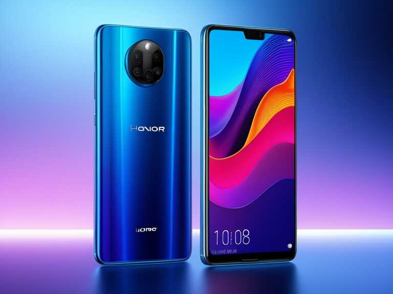

El Honor 50 Lite es una variante más económica de la serie Honor 50. Con
una pantalla FHD+ de 6.67 pulgadas, el Honor 50 Lite está potenciado por
un procesador Qualcomm Snapdragon 662 acompañado de 6GB o 8GB de memoria
RAM y 128GB de almacenamiento interno. La cámara dorsal del Honor 50
Lite es cuádruple, con lente principal de 64MP, y secundarios de 8MP,
2MP y 2MP, mientras que la cámara selfie es de 16MP. Una batería de 4300
mAh de carga rápida alimenta al Honor 50 Lite que completa sus
características con un lector de huellas lateral y Android 11 con los
servicios Google Play.